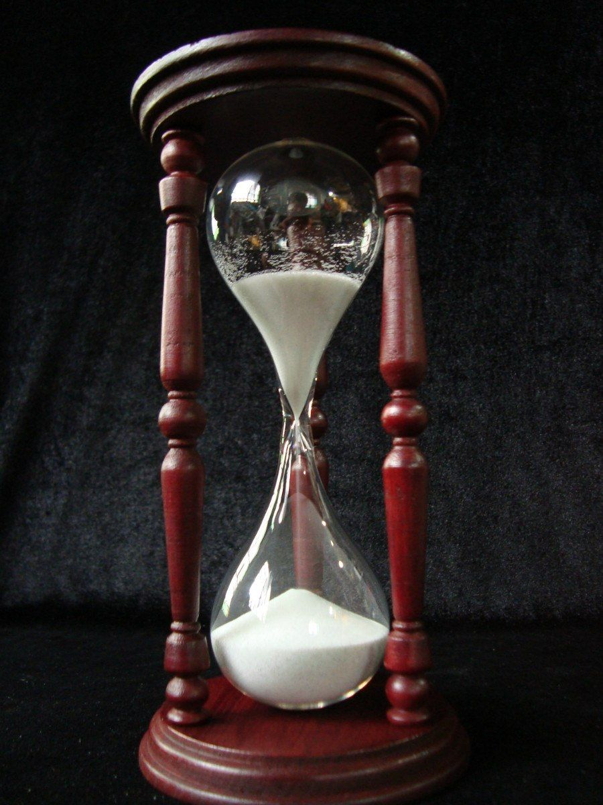
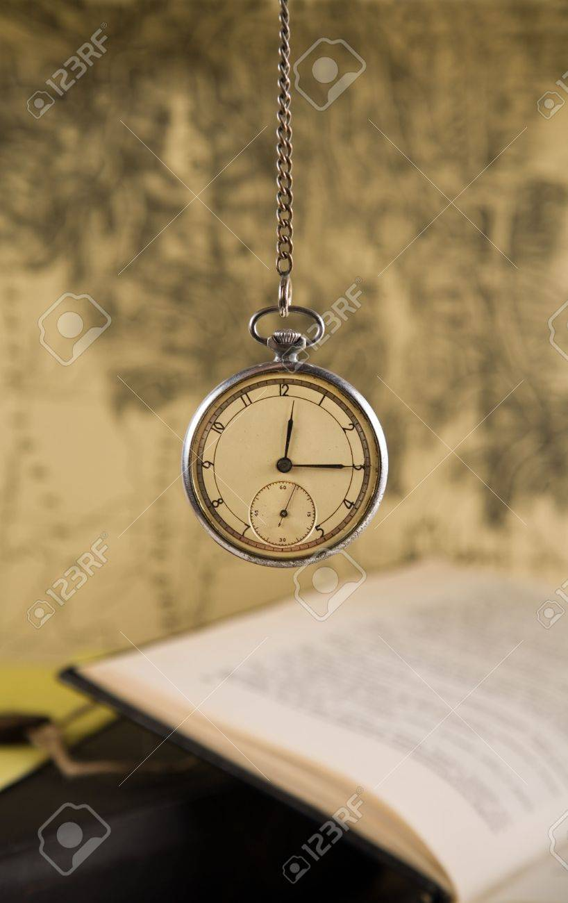
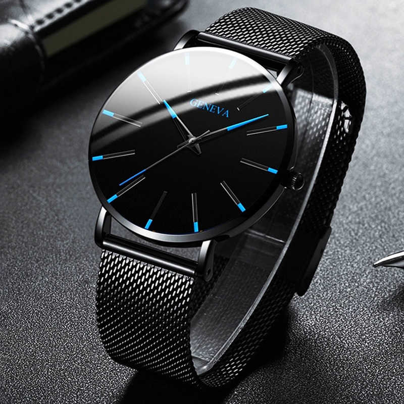
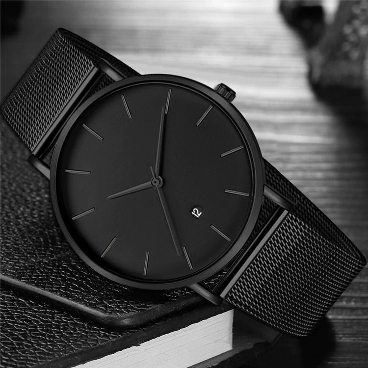
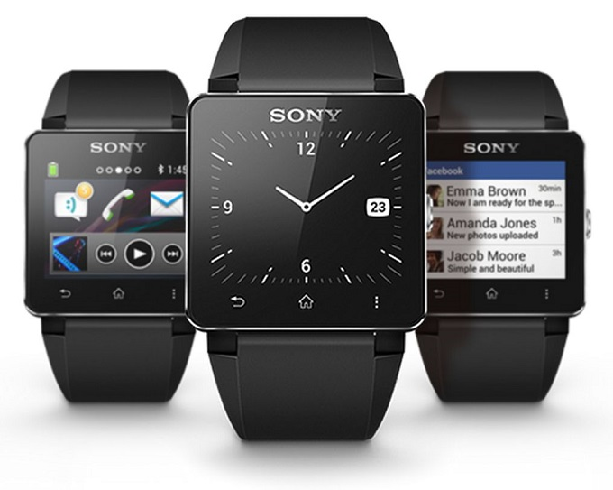

TECHNOLOGY
Relojes
Relojes electronicos y casuales.
El Primer reloj en la historia
~ Reloj de Sol: Las antiguas civilizaciones medían el paso del tiempo a través del transcurso del día y de los ciclos lunares. Por eso, aproximadamente 3000 años antes de Cristo, se inventó el reloj de sol o cuadrante solar, utilizado primero por los egipcios y chinos. Su funcionamiento se basa en la sombra que un gnomon (puntero triangular) arroja sobre una escala marcada en la superficie del reloj para indicar la posición del sol.
Reloj de Arena
No sé sabe bien quién lo inventó, pero entre las primeras constancias de él se encuentra un libro de 1393 que ofrecía instrucciones para preparar la arena del reloj. Aún lo usamos en los juegos de mesa o para medir el tiempo de una ducha.
Se cree que fue un monje llamado Liutprando el que lo presentó para hacer uso del mismo en la Catedral de Chartres, en Francia.

Reloj Mecanico
Es aquel que funciona gracias a un sistema mecánico de resortes y engranajes, sin depender de baterías o cualquier otro dispositivo electrónico.
~ Reloj de Bolsillo: Es un reloj que por su pequeño tamaño se puede llevar en un bolsillo, por lo general, posee una cadenilla colgante metálica (oro, plata, níquel) para sujetarlo llamada leontina. Fueron inventados en Francia a mediados del siglo XV.

~ Reloj de Mesa: Los relojes han figurado durante siglos como piezas importantes en el amueblamiento de salones, para lo cual se construían con diversas formas decorativas. Prescindiendo del reloj de arena, que viene usándose desde las civilizaciones griega y romana para medir lapsos cortos y prefijados, los relojes fueron usados en cantidad muy pequeña hasta finales del siglo XIII o mediados del siglo XIV, época en la cual se inventó el motor de resorte o muelle real, difundiéndose el uso del reloj-mueble en el siglo XVI.
Relojes de pulsera
En un principio, los relojes de pulsera eran poco populares para los varones, que preferían el reloj de bolsillo y desdeñaban los de pulsera porque los creían similares a una joya femenina.
Los primeros relojes de pulsera se fabricaron a fines del siglo XIX. Hasta la aparición de los relojes de cuarzo, los europeos, suizos y americanos llevaban la delantera en la construcción de relojes pero los japoneses fueron los primeros en este mercado.
En cambio ahora y en el futuro, los relojes son electronicos, ya que es parecido a un celular pero mas pequeño, con menos funciones y de usa en la mano. Los relojes de ahora tienen hasta el acceseso para escuchar musica y hasta poder llamar, estos relojes son muy delicados pero su uso y su capacidad es impresionante.

Patek Philippe es acreditado como el creador del reloj de pulsera en el siglo XIX. Los primeros relojes de pulsera fueron elaborados para las mujeres; luego, alrededor de 1880 surgió la necesidad de los militares y pilotos de usarlos también ya que requerían ver la hora sin tener que sacar su reloj del bolsillo. Comenzaron a producirse en masa a partir de la Primera Guerra Mundial.
Reloj de Cuarzo
El primer intento de un reloj de cuarzo lo llevó a cabo el estadounidense Warren Marrisson en 1929 quien empleó cristales de cuarzo y transformó sus oscilaciones en una corriente de frecuencia que puso en movimiento las agujas de un reloj. Pero fue hasta 1969 que en el mundo de la relojería se empezó una producción masiva.

ACTUALMENTE: Lo que en la historia de la relojería se denomina «Revolución del Cuarzo» llegó a mediados de los años setenta del siglo pasado, hasta entrados los ochenta y representó un salto tecnológico a la vez que una universalización del reloj de pulsera, que se volvió barato y preciso. El reloj pasó de ser un objeto de lujo a una herramienta asequible y además se consiguió que el dar cuerda y el poner en hora fuera una anécdota del pasado.
 
Reloj Digital
En 1970 nació el reloj digital. Tenía una pantalla oscura con puntos LED que se encendían e indicaban la hora al oprimir un botón. Comenzó a ser comercializado por la empresa estadounidense Hamilton, pero pronto los chinos tomaron la delantera y empezaron a producir relojes digitales con otras aplicaciones como cronómetro y calculadora.
Un reloj digital es un tipo de reloj que basa su funcionamiento en la electrónica digital para marcar el tiempo. La invención, en 1956, del reloj digital supuso una gran revolución en el campo de la relojería porque se consiguió fabricar relojes mucho más baratos y precisos que los de funcionamiento mecánico.
